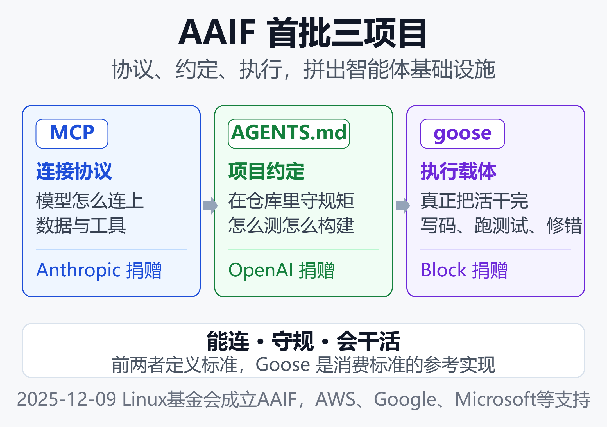
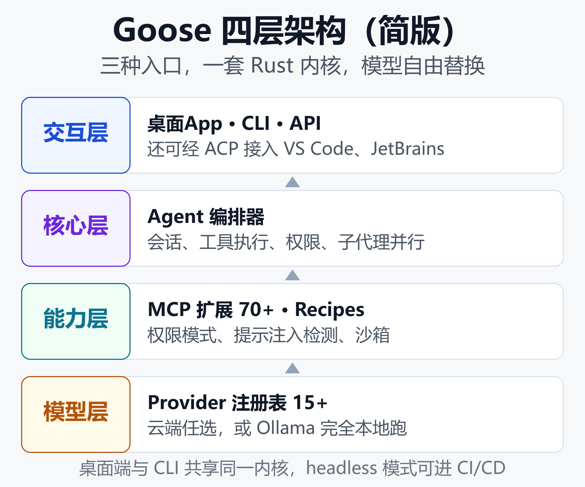

从Block内部工具到Linux基金会：开源Goose凭何与MCP、AGENTS.md并列
三家公司，一张桌子，三个项目
2025年12月9日，Linux基金会宣布成立 Agentic AI Foundation（AAIF，智能体AI基金会）。首批捐入的三个项目，来自三家正在AI市场上激烈竞争的公司：
- Anthropic捐出 MCP（Model Context Protocol，模型上下文协议，让 AI 连上外部工具的开放标准）
- OpenAI捐出 AGENTS.md（一份仓库说明书，告诉 AI 在本项目里该怎么干活）
- Block 捐出 Goose
支持方名单同样豪华：AWS（亚马逊云）、Google、Microsoft、Bloomberg（彭博财经）、Cloudflare（云安全公司）。用 Diginomica（海外企业软件分析媒体）的话说，这三家"本可以把项目留着自己用"，却都选择了交给中立治理。
问题在于：MCP 是连接模型与工具的事实标准，AGENTS.md 已被 6 万个开源项目采用，它们并列不奇怪。Block 是一家支付公司——Square（商户收单）、Cash App（美国国民转账应用）、Afterpay（先买后付）的母公司——它的 Goose 凭什么？
一组数据先摆在这里：GitHub 5.3 万+ Stars（星标，约等于开发者给项目点赞）、500+ 贡献者、Apache 2.0 协议（允许自由商用的开源许可）、Rust（主打性能与内存安全的编程语言）编写。
Block 内部则在 8 周内向 1.2 万名员工全量部署，工程团队每周平均节省 8-10 小时，公司整体人工节省率达 20%-25%。
接下来我们拆解 Goose 的来路、技术与代价，回答那个核心问题：它凭何与 MCP、AGENTS.md 并列。
Goose是什么：会动手的执行层，不是聊天插件
Goose 的官方定位是"本地优先的通用 AI Agent"（on-machine AI agent）。它不是编辑器插件，也不只是给代码建议——接到任务后它会自己规划、装依赖、写代码、跑命令、读报错、修完再验证，端到端跑完一个闭环。
核心档案
| 维度 | 情况 |
|---|---|
| 出品方 | Block（Square/Cash App 母公司） |
| 开源时间 | 2025年1月28日 |
| 协议 | Apache 2.0，可商用可分发 |
| 技术栈 | Rust 约58% + TypeScript 约34% |
| 形态 | 桌面App + CLI + API |
| 模型 | 15+ 提供商，含 Ollama 本地 |
| 扩展 | 70+ 官方文档化 MCP 扩展 |
| 治理 | Linux 基金会 AAIF |
三个关键设计让它区别于普通工具：
模型中立。 Anthropic、OpenAI、Google、Azure、Bedrock、OpenRouter 都能接；配 Ollama（本地运行开源模型的工具）可完全离线跑，代码一步不出机器。甚至能配 lead/worker 双模型：规划用强模型，执行用便宜模型。
本地执行。 桌面端（macOS/Linux/Windows）、CLI（命令行界面）、API三形态共用一套 Rust 内核，Agent 循环一致，不会"交互版一套、自动化版一套"。
MCP 原生。 Goose 是 MCP 最早的采用者之一，扩展能力靠社区增长：数据库、GitHub、Figma（在线设计工具）、浏览器、Google Drive 都能接。它同时还支持 ACP（Agent Client Protocol，智能体与编辑器之间的通信协议），可以从 Zed、JetBrains、VS Code 等编辑器里把它当 Agent 用。
# 安装与初始化（macOS/Linux）
cargo install goose-cli
goose configure # 选模型、配扩展
goose session # 开始交互式会话
出身：来自万人民用的生产环境
Goose 不是为融资路演写的 Demo（演示）。它的母公司 Block 是一家拥有上万名员工、数千名工程师的金融科技公司，技术栈复杂、自动化需求极高。
按中文社区的分析，Block 的 AI 转型有一个容易被忽略的起点：组织结构本身。CTO（首席技术官）Dhanji Prasanna 推动公司从偏业务线的 GM 制（以业务总经理为单元）转向更偏工程职能的 Functional 制（以工程职能为单元），让工程与设计重新成为公司的核心调度单元。
这本质上是一次对康威定律（Conway's Law：组织的沟通结构决定系统的架构）的主动应对。Goose 正是这次转型的工程产物：目标不是"让人写得更快"，而是让模型能稳定、可控地动手做事。
落地数据相当扎实：
- 8 周全量部署：Goose 在 8 周内覆盖 Block 全部 1.2 万名员工
- 每周省 8-10 小时：深度使用的工程团队平均节省的人力时间
- 20%-25%：通过 PR（代码合并请求）数量、功能吞吐量等多维度验证的整体人工节省率
- 60% 周活：约六成员工每周使用
非工程团队同样被激活：企业风险管理、法务部门用 Goose 在几小时内自建内部系统，替代过去数周的开发排期；移动端工具 Gling 直接操作 Android 辅助功能接口完成 UI 测试，替代整支 QA（软件测试）团队的手动流程。
Block 高管层的使用也是自上而下的：据报道 Block 联合创始人 Jack Dorsey 和 CTO 本人都每天在用。Block 衡量 Goose 成功的指标很朴素——每周节省了多少人类工时、非技术团队减少了多少对工程团队的依赖。
"源自生产环境"这一属性，是 Goose 日后能进入 AAIF 的重要出身证明。
三项目如何拼成一层基础设施
理解 Goose 的位置，需要先看清 AAIF 首批三项目的关系。它们不是三个竞品，而是一条链路上的三层：

三层缺一不可：MCP 让 Agent 能连上工具，AGENTS.md 让 Agent 在仓库里守规矩，Goose 则是真正把活干完的那个执行体。 前两者定义"能连"与"守规"，Goose 回答"会干活"——它同时消费前两者，是协议落地的参考实现（标准怎么落地，照着它抄就行）。这也是为什么 Anthropic、OpenAI、Block 三家竞争对手愿意坐在同一张桌子上：各捐一层，拼出完整的 Agentic AI 基础设施。
企业真正担心的从来不是协议本身，而是"协议会不会被发明方某天收回去"。AAIF 的中立治理解掉了这个顾虑——这与 Kubernetes（容器编排系统）之于容器、Linux 内核之于操作系统，是同一套逻辑。
凭何入选：看中的不是能力上限
如果只比拼能力上限或社区热度，Goose 并不占绝对优势。但 AAIF 选择首批项目，看的是位置是否正确。综合各方分析，理由至少有四条：
其一，它验证了标准可以跑起来。 MCP 不是纸面标准，Agent 不是研究概念——在真实企业环境里，它们是可以跑起来的，而且是被 1.2 万人跑出来的。
其二，它足够中立。 Goose 没有绑定 Block 的商业护城河，没有不可替代的私有 API，可以被 fork（复制代码自行修改）、被替换、被审计。Block 从未把它包装成 SaaS（在线订阅制软件），开源之初就明确目标是"超越 Block 的生命周期，成为开放生态的一部分"。
其三，它是协议的参考载体。 Goose 不制定新协议，而是让 MCP 和 AGENTS.md 有了一个工业级的落地样板。
其四，治理已完成迁移。 2025年12月捐赠后，2026年4月仓库与治理正式从 Block 迁至 aaif-goose 组织。这意味着即使 Block 未来优先级变化，项目也不会被悄悄搁置——和 MCP 不会因 Anthropic 战略调整而被收回，是同一种结构性保护。
白金成员席位也说明了分量：Amazon、Anthropic、Block、Bloomberg、Cloudflare、Google、Microsoft、OpenAI 各有一个理事会席位。一家支付公司的内部工具，和全球最主要的模型厂商、云厂商平起平坐。
技术拆解：一个智能体运行时怎么搭出来
Goose 走的是经典客户端-服务器架构，每一层都可插拔：

交互层提供桌面 App、CLI、REST API 与 ACP 四种入口；核心层的 Agent 编排器管理会话上下文、工具执行、权限与子代理；能力层靠扩展管理器接入 MCP 服务器，配合 Recipes 与权限模式；模型层用提供商（Provider）注册表抽象 15+ 家模型服务，支持模型能力探测与成本估算。
真正让它在开源阵营里站住脚的，是四个差异化能力：
Recipes：可复用工作流。 一个 Recipe 是 YAML（最常用的配置文件格式）文件，把指令、所需扩展、结构化输入、子配方打包成可分享的工作流：
# recipe 示例（字段已省略）
name: pr-review
instructions: 审查当前分支改动
extensions: [github, filesystem]
它能被内置调度器无人值守执行，也能进 CI/CD（持续集成与持续发布流水线）。多数开源编程 Agent 没有这层持久化能力——规则文件（如 AGENTS.md）告诉 Agent"遵循什么模式"，Recipes 则规定"按什么顺序做什么"。
Subagents：并行子代理。 把代码审查、调研、文件处理拆给独立子代理并行推进，主对话保持干净。
权限模式一等公民。 完全自动、手动审批、智能审批、纯聊天等模式是系统级配置，而非硬编码默认值——承认了探索任务、生产仓库、CI 场景对自主度的要求完全不同。此外还有提示注入检测（防范藏在文本里的恶意指令）、工具权限控制、沙箱（基于系统 seatbelt，目前需手动开启且仅限 macOS）与对抗式审阅者。
多形态一致。 桌面端与 CLI 共享内核，headless（无界面）模式可嵌入自动化任务；通过 ACP 还能接入 VS Code、Cursor、JetBrains 等编辑器。
免费的代价：27分的差距与一次7.0分的漏洞
把 Goose 描绘成"免费版 Claude Code"（Anthropic 官方的付费编程 Agent）是媒体最爱的叙事，但几个硬事实必须摆出来。
同模型不同分数
在行业标准基准 SWE-bench Verified（拿真实开源项目的待修 Bug 考 AI 的权威测试）上：
| 组合 | 得分 |
|---|---|
| Goose + Claude Sonnet | 约45% |
| Claude Code + Claude Sonnet | 72.7% |
| Claude Code + Opus 4.5 | 80.9% |
前两行用的是同一个底层模型（Anthropic 中档模型 Claude Sonnet），27 个百分点的差距来自编排层——任务拆解、工具调用、验证回路的成熟度。Anthropic 针对自己的 Agent 循环做过专门调优，通用框架难以复制。好消息是差距随模型变强而收窄；坏消息是接 Opus 4.5（Anthropic 旗舰系列，该系列最新已迭代至 5.5）的 API 账单可能每月数百美元，成本优势随之消失。
上手与使用的摩擦
- 首次配置约需 20-30 分钟，对新手不算友好
- 官方文档承认 Goose 强依赖模型的工具调用能力，配弱模型体验明显下滑
- 它不是编辑器，没有 Cursor 式内联 diff（逐行改动对比）面板，需自备 IDE（集成开发环境，如 VS Code）
- 自带 API Key（模型服务密钥）意味着 Agentic 循环的 token（按用量计费的字符单位）账单和 shell（电脑终端）权限边界都归你
- 自主性强有时变成自作主张，可能改动你没打算动的文件
一次真实的高危漏洞
2026年7月，Goose 披露高危漏洞 CVE-2026-72718（安全漏洞的公开编号；GitHub 安全公告 GHSA-r5pp-p5r8-466r；CVSS 评分 7.0，满分 10，属高危）。
goose review 命令调用系统 git 收集改动对比时，未剥离恶意仓库 .git/config 里的 core.fsmonitor（可让 Git 执行外部命令的配置项），导致在联系模型之前、没有任何权限提示的情况下，以用户权限执行任意命令。1.44.0 版本（2026年7月23日）已修复。
值得注意的是，Claude Code 此前也出过同类问题（CVE-2026-55607）。这是编码 Agent 的结构性风险类别：凡是会对不可信仓库执行 git diff 的 Agent，只要不清洗 git 配置就暴露在同一攻击面下。选型时应把升级及时性与安全响应能力纳入考量。
2026路线图：从助手到本地优先平台
Goose 公布的 2026 年 2-4 月路线图显示，它想做的事远不止编程助手：
- 本地优先：内置推理与开源模型下载，不再依赖外部运行时；针对小模型优化 Agent 循环与工具调用
- Apps 生态：支持 MCP Apps 与 vibe-coded 应用（用自然语言随手生成的应用），让应用能连多个 MCP 服务器、定义自己的工具
- 开箱即用：最小化配置，新用户装上就能干活，无需先理解 MCP、Provider、模型概念
- 元智能体编排：从单聊天 Agent 进化为管理会话、配方、并行子代理的编排器
- 协议边界：标准化客户端-服务器架构，以 ACP 承载客户端与扩展通信，并用 TUI（终端文字界面）、移动端等新客户端验证协议
翻译成大白话：Goose 想从"一个能干活的工具"变成"本地智能体的操作系统"——这正好呼应了它在 AAIF 里的角色：不卖模型、不卖订阅，只做中立的执行层。
小结：中立的"无聊"，恰恰是基础设施的品质
回到最初的问题：Goose 凭何与 MCP、AGENTS.md 并列？
答案可以概括为三句话。
出身硬：它是被 1.2 万人在真实生产环境跑出来的执行层，不是 Demo。
位置对：它是 MCP 与 AGENTS.md 的参考实现，补全了协议、约定、执行的三层拼图。
足够中立：Apache 2.0、基金会治理、无商业护城河，可以被 fork、被审计、被信任——而"无聊的中立"正是公共基础设施最重要的特质。
它适合谁？
预算敏感、隐私敏感、想摆脱订阅与厂商配额的开发者和小团队；需要把工作流固化为可复用文件的团队；以及必须本地化、离线部署的受监管环境。
它不适合谁？
完全不想碰配置的新手，以及把基准分数和开箱顺滑度放在第一位的重度编码用户。
免费从来不是没有代价，中立也不是天然成立。Goose 的价值在于，它把"代价"明码标价写在文档里，把"中立"用制度锁在基金会框架内。对一个想把 AI Agent 长期纳入工程体系的团队来说，这可能比"更强的模型"更难得。
免责声明
本文基于公开资料整理分析，仅供参考，不构成任何投资或选型建议。文中涉及的基准分数、统计数据随版本与时间变化，请以项目官方最新信息为准。使用任何具备自主执行能力的 AI Agent 前，请评估其权限边界与安全风险。
参考来源
- Linux Foundation —— 成立 Agentic AI Foundation 的公告
- Block —— codename goose 开源发布
- GitHub —— aaif-goose/goose 仓库
- Wikipedia —— Goose (AI agent)
- Jimmy Song —— 解析 Goose：为什么它会进入 AAIF
- AI内参 —— Block的AI原生之路：智能体Goose如何重塑企业生产力
- VentureBeat —— Claude Code costs up to $200 a month. Goose does the same thing for free
- Anthropic —— Introducing Claude Opus 5.5
- Morph —— Goose vs Claude Code 2026 对比
- TerminalBlog —— goose review 命令任意命令执行漏洞分析
- GitHub Discussions —— goose OSS Roadmap (Feb–Apr 2026)
- Diginomica —— Anthropic, OpenAI and Block donate AI agent projects to new Linux Foundation body
- AI工具宝箱 —— Goose 开源AI编程Agent能替代Claude Code吗
- InfoQ —— Block Launches Open-Source AI Framework Codename Goose
相关阅读
- MCP vs A2A：AI Agent两大协议深度解析
- OpenCode实战指南：免费AI编程Agent + 免费大模型，零成本搞定代码开发
- 闭源AI编程工具横评：2026年该为谁付费
- Harness工程：AI Agent成败的看不见的一半
- 企业AI Agent部署实战指南
推荐搭配装备
善其事，利其器。以下硬件能最大化你的AI体验👇
🔗 通过以上链接购买可支持本站持续运营 🙏